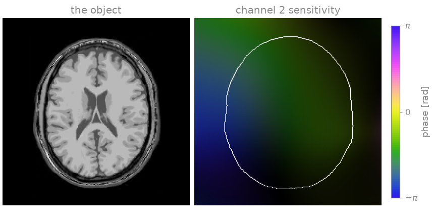
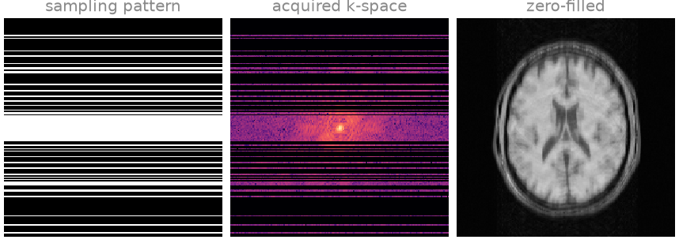
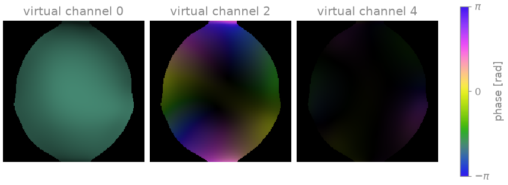
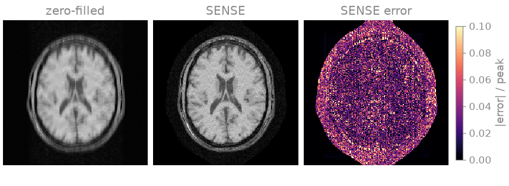
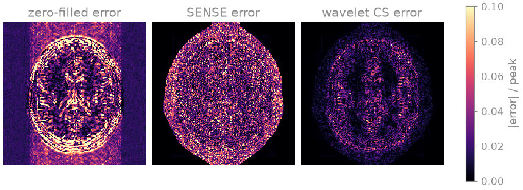
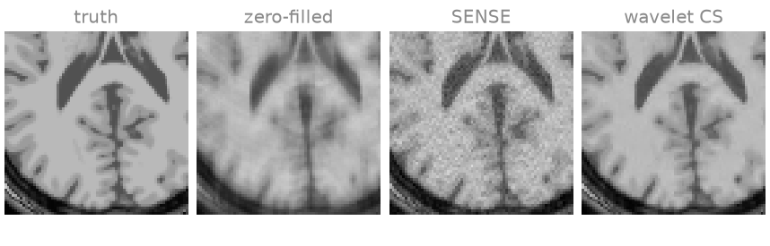
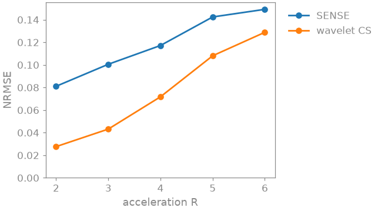

Note
Go to the end to download the full example code.
2. From k-space to an image#
In lesson 1 you saw how BART’s arrays look as tensors and how its FFT takes a fully sampled k-space to an image. A real scan is rarely fully sampled: you skip phase-encoding lines to shorten it, and the image folds onto itself. In this lesson you reconstruct such a scan, one step at a time, and after each step you look at what it did to the image.
The pipeline is the one most of the course builds on: compress the channels, estimate the coil sensitivities, and solve the SENSE model
where \(S\) multiplies by the coil sensitivities, \(F\) is the Fourier transform, \(P\) keeps the phase encodes you acquired, and \(\varepsilon\) is noise. Encoding operators derives the model.
Learning objectives
Recognise the aliasing of an undersampled Cartesian scan.
Compress the channels with
bartorch.tools.cc()and estimate their sensitivities withbartorch.tools.ecalib()(ESPIRiT).Reconstruct with
bartorch.apps.pics(), first as SENSE and then with a wavelet penalty (compressed sensing), and compare the two to the truth.See how far each one goes as you skip more lines.
Previous: 1. Your data as tensors. Next: 3. Coil sensitivities, where you look more closely at where the coil sensitivities come from.
Simulated acquisition#
The object is a slice of the BrainWeb brain [1], rendered as a \(T_1\)-weighted spin-echo image; how it is built does not matter here, so that code is hidden. You acquire it with BART’s analytical eight-channel head coil: every channel sees the image through its own sensitivity, and the scanner records the Fourier transform of each channel image, plus thermal noise.
import torch
import bartorch
import bartorch.tools as bt
from bartorch import apps, priors
COILS = 8
sensitivities = bt.coils(t=bt.grid(D=(SIZE, SIZE, 1)), n=COILS)[:, 0]
sensitivities /= bartorch.rss(sensitivities, axes=(0,), keepdim=True)
kspace = bartorch.fft(sensitivities * image, axes=(-2, -1), unitary=True)
kspace = bt.noise(kspace, n=1e-4, s=42)
print(f"k-space {tuple(kspace.shape)}: (coils, y, x)")

k-space (8, 192, 192): (coils, y, x)
On the right is one channel’s sensitivity: brightness is its magnitude, colour its phase. It is strong near its coil element and weak across the head. Because every channel sees a different part of the head, the eight of them together carry spatial information that a single coil does not, and that is what lets you skip lines below.
Dividing the sensitivities by their root sum of squares makes the best
combination of the channel images equal to the image itself, so you can
compare every reconstruction below directly with image.
Undersampling#
You keep every readout sample, since they cost no scan time, and acquire one phase-encoding line in three. The lines are drawn at random, more densely near the centre of k-space where most of the signal is, around a fully sampled block of 24 central lines: the autocalibration (ACS) region, from which you will estimate the coil sensitivities. The pattern is a column, so it broadcasts over the readout and the channels.
ACCELERATION = 3
CALIBRATION = 24
pattern = simulate(ACCELERATION, CALIBRATION) # (y, 1), ones on acquired lines
measured = kspace[:, None] * pattern # (coils, z, y, x), as BART expects
print(f"{int(pattern.real.sum())} of {SIZE} lines acquired")
63 of 192 lines acquired
The simplest thing you can do with these data is to transform each channel back as it is, with zeros in the missing lines, and combine the channels by root sum of squares:
channel_images = bartorch.ifft(measured[:, 0], axes=(-2, -1), unitary=True)
zero_filled = bartorch.rss(channel_images, axes=(0,))

Readout runs horizontally, phase encoding vertically. The zero-filled image is the aliasing you have to remove: every missing line leaves a faint copy of the head, smeared along the phase-encoding direction.
Coil compression#
Eight channels carry less than eight images’ worth of information, because
their sensitivities overlap. bartorch.tools.cc() finds the
combinations of channels that carry most of it [2] and
bartorch.tools.ccapply() projects the data onto them. Six virtual
channels lose almost nothing, and every later step works on six channels
instead of eight.
VIRTUAL = 6
matrix = bt.cc(measured, p=VIRTUAL, M=True, r=CALIBRATION)
compressed = bt.ccapply(measured, matrix, p=VIRTUAL)
print(f"{measured.shape[0]} channels -> {compressed.shape[0]}")
8 channels -> 6
Coil sensitivities#
ESPIRiT [3] estimates the sensitivities from the ACS region alone.
crop sets them to zero where ESPIRiT finds no signal, which keeps the
background out of the reconstruction. Lesson 3 looks inside this step.
maps = bt.ecalib(compressed, maps=1, calib_size=CALIBRATION, crop=0.8)
print(f"maps {tuple(maps.shape)}")

maps (6, 1, 192, 192)
SENSE#
With the sensitivities you can solve the model at the top of the page.
bartorch.apps.pics() does it the way BART’s pics command does;
with only l2, a small Tikhonov weight, it is SENSE [4], solved by
conjugate gradients:
sense = apps.pics(compressed, maps, l2=0.001, maxiter=60)

The folded copies are gone. What is left is noise, strongest in the middle of the head where the coils are least distinct and the inversion amplifies it most (the g-factor), and a speckle of residual aliasing from the random sampling.
Compressed sensing#
Random sampling makes the leftover aliasing look like noise, and a brain
image is sparse in a wavelet basis while noise is not. So you can ask
pics for the image that fits the data and has few wavelet
coefficients [5]: give it a bartorch.priors.Wavelet term
over the two image axes, and let FISTA [6] solve it.
wavelet = apps.pics(
compressed,
maps,
regularizers=priors.Wavelet((-1, -2), 0.004),
solver="fista",
maxiter=100,
)


The error maps are on one scale. The wavelet penalty removes most of the noise and the speckle; in the enlarged region behind the ventricles the cortex is sharp and the white matter smooth. The NRMSE and SSIM say the same:
zero-filled: NRMSE 0.130, SSIM 0.520
SENSE: NRMSE 0.101, SSIM 0.737
wavelet CS: NRMSE 0.044, SSIM 0.926
scaled=True fits one global factor before comparing, so that only the
shape of the error counts and not the overall scale of the image. You
compare magnitudes because ESPIRiT’s maps can carry a different phase from
the true ones, and the image then carries it too.
The wavelet weight, 0.004, is a choice: a larger one removes more noise and more fine detail with it. Lesson 5 shows how to choose it.
Exercise: acceleration factor#
How far can you push the acceleration? Rerun the same two reconstructions with every third, fourth, fifth and sixth line, keeping the ACS block:
accelerations = (2, 3, 4, 5, 6)
scores = {"SENSE": [], "wavelet CS": []}
for R in accelerations:
acquired = kspace[:, None] * simulate(R, CALIBRATION)
data = bt.ccapply(acquired, matrix, p=VIRTUAL)
maps_R = bt.ecalib(data, maps=1, calib_size=CALIBRATION, crop=0.8)
sense_R = apps.pics(data, maps_R, l2=0.001, maxiter=60)
wavelet_R = apps.pics(
data,
maps_R,
regularizers=priors.Wavelet((-1, -2), 0.004),
solver="fista",
)
for name, estimate in (("SENSE", sense_R), ("wavelet CS", wavelet_R)):
scores[name].append(bt.nrmse(image.abs(), estimate.abs(), scaled=True))

Both errors grow with the acceleration. The wavelet penalty stays ahead everywhere, but its lead shrinks: with fewer lines there is less incoherence for it to exploit and more of the image itself is missing. Try another weight, or a smaller ACS block, and see which one breaks first.
As a spec#
What this lesson built, stated the way you would ask an agent for it:
Reconstruct a 2D Cartesian multichannel k-space of shape (coils, 1, y, x),
undersampled along y with a fully sampled 24-line ACS block, with bartorch.
Compress to 6 virtual channels with bt.cc and bt.ccapply, estimate one set
of ESPIRiT maps with bt.ecalib (crop 0.8), then reconstruct with
apps.pics twice: SENSE (l2=0.001, 60 CG iterations) and wavelet
compressed sensing (priors.Wavelet over the last two axes, weight 0.004,
FISTA, 100 iterations). Report NRMSE and SSIM of both magnitudes against
the reference after a global least-squares scale.
References#
Total running time of the script: (0 minutes 6.306 seconds)